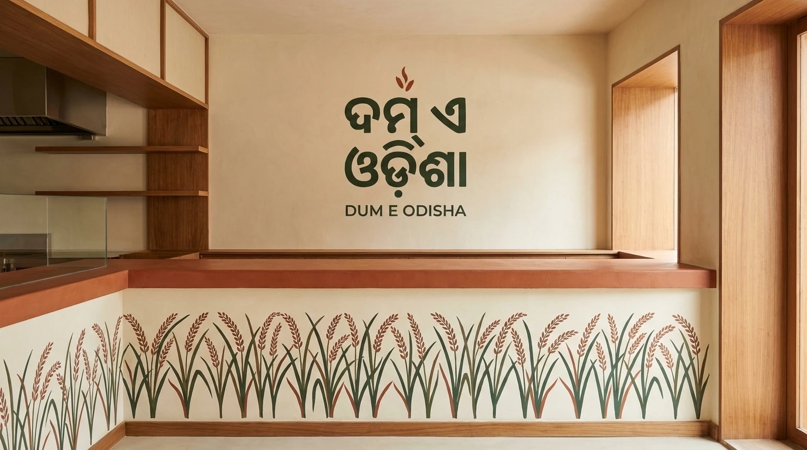
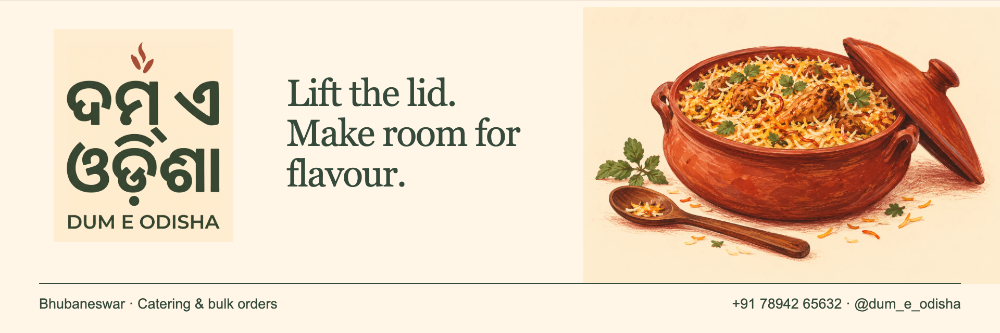
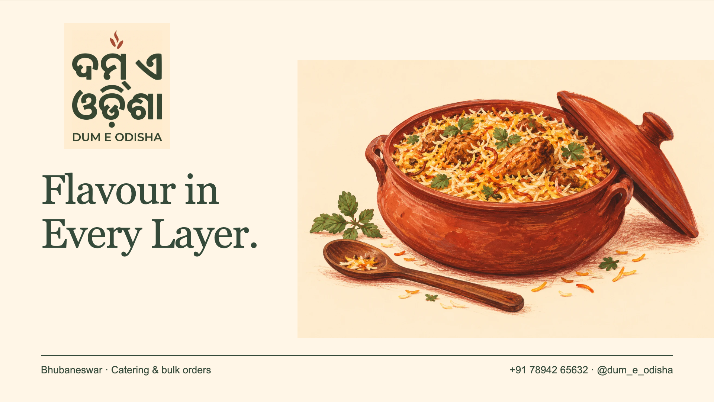
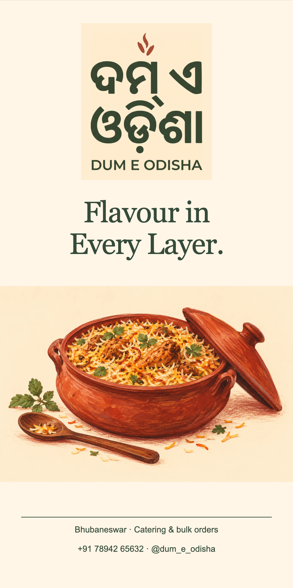

New identity exploration / Odia-led
Odia at heart
Odia becomes the first thing you read. Rounded, substantial lettering sits above a quiet English name; leaf and terracotta give it a different mood.
The idea behind
the lettering.
Regional script leads the hierarchy, with English providing an accessible second reading. No temple or ritual motif stands in for the language.
The generated sketch is a visual direction. Check its letterforms and the proposed transliteration against the exact typeset specimens below with a native Odia reader.
Generated lettering sketch. Script details are exploratory; the typeset proof below preserves the exact proposed text.
The exact name / compare real fonts
Give the script
room to speak.
Odia
The font specimen is live typeset text. It preserves the supplied Unicode string rather than relying on generated pixels. Native-speaker spelling and shaping review is still pending.
01 / At architectural scale
A wall with character.

02 / A wide welcome
The horizontal banner.


03 / On screen & on the floor
One name.
A bigger presence.

The TV display
1920 × 1080 px / 16:9 brand holding slide. No invented menu or prices.


The tall standee
900 × 1800 px / layout concept; supplier dimensions and print proof required.

All artwork here is a proposal. New scripts and letterforms need owner selection, native-reader review where relevant, vector production and real-scale proofing before installation. The current brand assets remain unchanged.